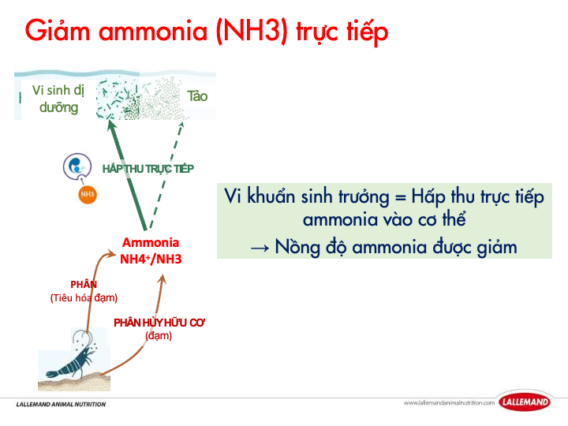
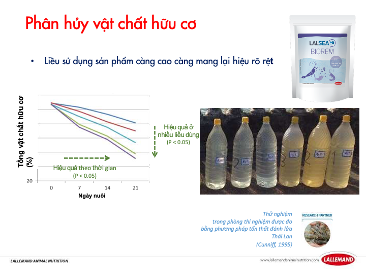
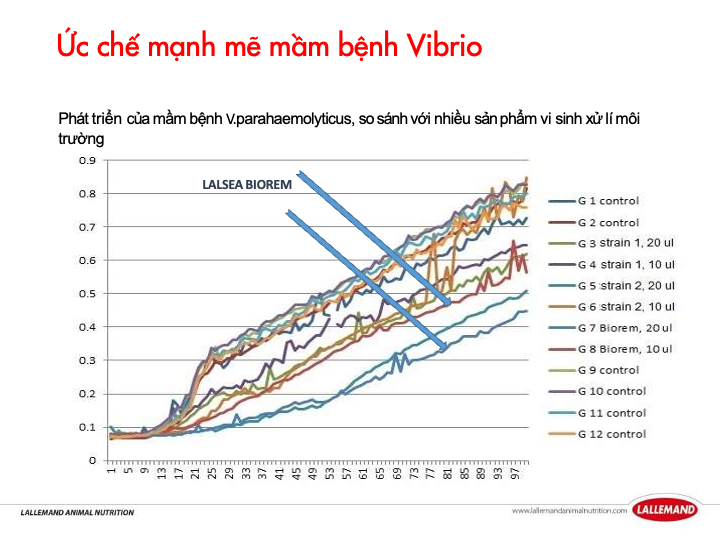

Tập trung vào nền đáy, tải hữu cơ và hành vi nước của ao nuôi.
Nước xấu – đáy bẩn – khí độc tăng?
Giải pháp vi sinh quản lý nước cho ao tôm
LALSEA BIOREM Dọn sạch đáy, giữ nước ổn và giảm áp lực khí độc nhanh hơn
Nếu bạn đang đánh vi sinh liên tục mà nước vẫn xấu, bùn vẫn dày và tôm vẫn yếu, vấn đề thường không nằm ở mặt nước mà nằm ở nền đáy và tải hữu cơ chưa được xử lý đúng.
Ao hữu cơ cao
Bùn đáy dày
NH3 / NO2 tăng
Dễ quản lý hơn trong giai đoạn cho ăn mạnh, mật độ cao và biến động thời tiết.
Phù hợp khi ao bắt đầu nặng đáy, nước thất thường và cần một lớp quản lý sinh học bền hơn.
LALSEA BIOREM
Ao tôm / Vi sinh

Xử lý đúng gốc, không chỉ đánh nước
LALSEA BIOREM phù hợp khi mục tiêu là làm sạch đáy, giảm tải hữu cơ và kéo ao về trạng thái ổn định sinh học hơn thay vì chỉ xử lý triệu chứng nổi.
- Phân hủy nhanh hữu cơ, giảm bùn đáy rõ rệt.
- Hỗ trợ kiểm soát NH3 / NO2 để nước nhẹ hơn.
- Ổn định hệ vi sinh, giảm áp lực vi khuẩn bất lợi.
01
Cắt tải hữu cơ tích tụ
02
Làm nhẹ áp lực khí độc
03
Giữ ao dễ quản lý hơn
Nước mau xuống màu, lớp bùn dày và đáy nuôi giữ nhiều chất thải tích tụ.
Biến động sau mưa, sau đợt cho ăn mạnh hoặc khi tảo bùng rồi sụp.
Ưu tiên nền vi sinh bền hơn để giảm số lần phải xử lý phản ứng.
Dễ thay ảnh hiện trường, dashboard và infographic mà không phá bố cục.
Pain map
Bạn có đang gặp đúng các biểu hiện này không?
Đây là nhóm tín hiệu rất thường gặp khi nền đáy và tải hữu cơ đang kéo chất lượng nước đi xuống, làm đội kỹ thuật phải xử lý liên tục nhưng ao vẫn không bền.
Nước nhanh dơ
Bùn đáy dày lên mỗi ngày, màu nước xuống nhanh và ao thiếu độ “nhẹ”.
Khí độc tăng
NH3 / NO2 tăng kéo stress, ăn yếu và khó giữ nhịp tăng trưởng ổn định.
Tảo biến động
Tảo bùng rồi sụp khiến màu nước thay đổi nhanh và khó giữ kiểm soát vận hành.
Xử lý rời rạc
Đánh vi sinh hoài nhưng nước vẫn không ổn vì phần gốc của nền đáy chưa được xử lý.
Giải pháp
Xử lý đúng gốc, không phải chỉ cứu tạm mặt nước
Hướng tiếp cận của LALSEA BIOREM là chỉnh lại nền sinh học ao để hệ thống tự ổn hơn, thay vì cứ chờ nước xấu rồi xử lý từng đợt.
Phân hủy nhanh hữu cơ, giúp đáy ao sạch hơn và giảm áp lực bùn tích tụ.
Hỗ trợ kiểm soát NH3 / NO2 để nước nhẹ hơn và giảm áp lực khí độc.
Giữ hệ vi sinh ao ổn định hơn, từ đó giảm áp lực từ vi khuẩn bất lợi.
Làm nền nước bền hơn để kỹ thuật dễ quản lý suốt vụ nuôi.
Cơ chế
Cách LALSEA BIOREM xử lý ao của bạn
Cắt nhanh tải hữu cơ
Hỗ trợ bẻ nhỏ chất thải tích tụ ở đáy, giúp ao bớt nặng và giảm lớp bùn.
Kéo nhẹ áp lực NH3 / NO2
Khi hữu cơ và nền đáy được xử lý đúng, nước bớt bị đẩy vào trạng thái độc.
Ổn định hệ vi sinh có lợi
Nền vi sinh bền hơn giúp ao đỡ thất thường trong giai đoạn nuôi mật độ cao.
Giữ ao dễ quản lý hơn
Đáy sạch hơn và nước ổn định hơn giúp kỹ thuật chủ động thay vì chạy theo sự cố.
Technical visuals
Các khung hình kỹ thuật có thể thay bằng ảnh thực tế của bạn
Bạn có thể thay các visual mẫu bên dưới bằng ảnh hiện trường, dashboard, sơ đồ xử lý hoặc infographic riêng mà vẫn giữ nguyên bố cục landing.

Giảm NH3 trực tiếp
Vi khuẩn dị dưỡng trong BIOREM hấp thu trực tiếp ammonia (NH4⁺/NH3) vào sinh khối khi sinh trưởng — giảm nồng độ khí độc mà không phụ thuộc vào tảo hay quá trình nitrat hóa.

Phân hủy hữu cơ hiệu quả cao
Thử nghiệm cho thấy LALSEA BIOREM phân hủy vật chất hữu cơ vượt trội so với đối chứng — giảm tải bùn đáy, cắt nguồn phát sinh khí độc từ gốc.

Ức chế mạnh mầm bệnh Vibrio
Dữ liệu thực nghiệm cho thấy LALSEA BIOREM kiềm hãm đáng kể sự phát triển của Vibrio — giảm áp lực mầm bệnh cơ hội trong ao nuôi mật độ cao.

Nên dùng ngay khi
Đừng chờ nước sập rồi mới xử lý
LALSEA BIOREM phát huy giá trị tốt nhất khi được đưa vào đúng lúc ao đang bắt đầu mất cân bằng, trước khi vấn đề môi trường kéo theo stress và hụt hiệu suất.
- Ao có dấu hiệu nước xấu, bùn nhiều hoặc bắt đầu có mùi đáy.
- Giai đoạn nuôi mật độ cao, cho ăn mạnh, lượng hữu cơ tăng nhanh.
- Sau mưa, tảo biến động mạnh và nước đục hơn bình thường.
- Gần về size, cần giữ nước bền để tránh rủi ro hụt nhịp tăng trưởng.
Khi nào nên xin phác đồ riêng
Chỉ cần có một trong các dấu hiệu này, nên để kỹ thuật xem case cụ thể
Mỗi ao có mật độ, màu nước, lượng bùn và nhịp cho ăn khác nhau. Cùng một sản phẩm nhưng cách dùng hiệu quả vẫn cần đặt vào đúng tình trạng ao thực tế.
Đã xử lý nhiều lần nhưng đáy vẫn đen và nước vẫn nặng.
NH3 / NO2 tăng lặp lại sau mỗi đợt thời tiết xấu hoặc sau mưa.
Tôm phản ứng stress khi nước biến động dù khẩu phần vẫn giữ.
Cần một phác đồ môi trường rõ ràng thay vì xử lý rời rạc.
Bộ đôi bảo vệ đường ruột & miễn dịch
LALPACK PROBIO + LALPACK IMMUNE
Kết hợp 2 sản phẩm chuyên biệt từ Lallemand để bảo vệ tôm từ bên trong: đường ruột khỏe hơn, miễn dịch mạnh hơn, giảm rủi ro dịch bệnh suốt vụ nuôi.
LALPACK PROBIO
Bảo vệ đường ruột
Gut Protection — tăng hiệu suất tiêu hóa
Kết hợp probiotic Pediococcus acidilactici MA18/5M (BACTOCELL), nấm men sống S.c. boulardii CNCM I-1079 (LEVUCELL SB) và dẫn xuất thành tế bào nấm men.
- Điều hòa hệ vi sinh đường ruột, tăng vi khuẩn có lợi (LAB).
- Ức chế mạnh các chủng Vibrio gây bệnh trong đường ruột.
- Cải thiện cấu trúc niêm mạc ruột, tăng hấp thu dinh dưỡng.
- Trung hòa độc tố vi khuẩn nhờ đặc tính riêng của S.c. boulardii.
500g x 10 gói / thùng
3.860.000 đ
LALPACK IMMUNE
Kích thích miễn dịch
Immune Stimulation — tăng sức đề kháng
Phối hợp các phân đoạn nấm men chuyên biệt: liên kết mầm bệnh mạnh (YANG), điều hòa miễn dịch đa thụ thể và cân bằng chống oxy hóa (selenium yeast).
- Gắn kết và loại bỏ Vibrio, E.coli trực tiếp trong ruột.
- Kích hoạt miễn dịch cân bằng, không gây viêm quá mức.
- Chống oxy hóa sơ cấp — trung hòa ROS hiệu quả hơn.
- An toàn dùng lâu dài, không gây suy giảm miễn dịch.
500g x 10 gói / thùng
3.710.000 đ
Tại sao nên dùng song song cả hai?
PROBIO giữ ruột khỏe
Đường ruột ổn định, hấp thu tốt hơn, ít cơ hội cho mầm bệnh bám dính.
IMMUNE nâng đề kháng
Hệ miễn dịch được kích hoạt sẵn sàng, tôm phản ứng nhanh hơn khi gặp stress.
Kết hợp = bảo vệ toàn diện
Bên trong (ruột) và bên ngoài (miễn dịch) cùng được củng cố — giảm rủi ro dịch bệnh, tăng tỷ lệ sống.
Bảng giá
Giá sản phẩm nhóm Lallemand
Áp dụng từ ngày 15/01/2026 — Công ty TNHH Thần Vương phân phối chính hãng.
LALSEA BIOREM
250g x 20 gói / thùng
8.200.000 đ / thùng
Tặng 4 gói
Mua 1–4 thùng
LALPACK IMMUNE
500g x 10 gói / thùng
3.710.000 đ / thùng
Tặng 2 gói
Mua 1–9 thùng
LALPACK PROBIO
500g x 10 gói / thùng
3.860.000 đ / thùng
Tặng 2 gói
Mua 1–9 thùng
Combo dùng thử
Combo giá dùng thử — chỉ cho đơn đầu tiên
- 2 gói LALSEA BIOREM
- 1 gói LALPACK IMMUNE
- 1 gói LALPACK PROBIO
Chỉ áp dụng cho đơn đặt hàng lần đầu tiên.
1.553.000 đ
Đặt combo dùng thử
CTA cuối
Gửi thông tin ao để nhận phác đồ xử lý riêng
Đội kỹ thuật sẽ liên hệ trong vòng 24 giờ với phác đồ phù hợp điều kiện ao thực tế của bạn.